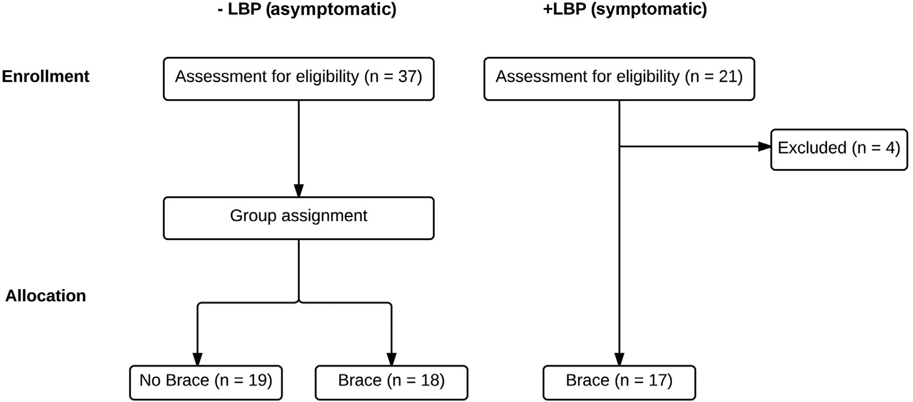
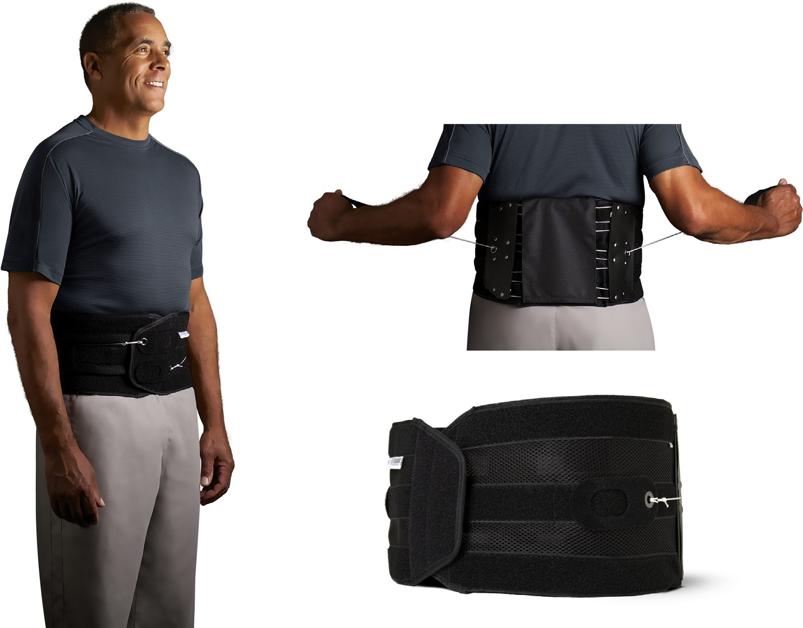

    <!DOCTYPE html>
    <html>
    <head>
      <meta charset="utf-8">
      <meta http-equiv="X-UA-Compatible" content="IE=edge">
      <!-- common.css -->
      <style>* {-webkit-tap-highlight-color: rgba(0,0,0,0);}html {-webkit-text-size-adjust: none;}body {font-family: -apple-system, Helvetica, Arial, sans-serif;margin: 0;padding: 20px;color: #333;word-wrap: break-word;}h1, h2, h3, h4, h5, h6 {line-height: 1.1;}img {max-width: 100% !important;height: auto;}blockquote {margin: 0;padding: 0 15px;color: #777;border-left: 4px solid #ddd;}hr {background-color: #ddd;border: 0;height: 1px;margin: 15px 0;}code {font-family: Menlo, Consolas, 'Ubuntu Mono', Monaco, 'source-code-pro', monospace;line-height: 1.4;margin: 0;padding: 0.2em 0;font-size: 90%;background-color: rgba(0,0,0,0.04);border-radius: 3px;}pre > code {margin: 0;padding: 0;font-size: 100%;word-break: normal;background: transparent;border: 0;}ol {list-style-type: decimal;}ol ol, ul ol {list-style-type: lower-latin;}ol ol ol, ul ol ol, ul ul ol, ol ul ol {list-style-type: lower-roman;}table {border-spacing: 0;border-collapse: collapse;margin-top: 0;margin-bottom: 16px;}table th {font-weight: bold;}table th, table td {padding: 6px 13px;border: 1px solid #ddd;}table tr {border-top: 1px solid #ccc;}table tr:nth-child(even) {background-color: #f8f8f8;}input[type="checkbox"] {cursor: default;margin-right: 0.5em;font-size: 13px;}.task-list-item {list-style-type: none;}.task-list-item+.task-list-item {margin-top: 3px;}.task-list-item input {float: left;margin: 0.3em 1em 0.25em -1.6em;vertical-align: middle;}#tag-field {margin: 8px 2px 10px;}#tag-field .tag {display: inline-block;background: #cadff3;border-radius: 4px;padding: 1px 8px;color: black;font-size: 12px;margin-right: 10px;line-height: 1.4;}</style>
      <!-- ace-static.css -->
      <style>.ace_static_highlight {white-space: pre-wrap;}.ace_static_highlight .ace_gutter {width: 2em;text-align: right;padding: 0 3px 0 0;margin-right: 3px;}.ace_static_highlight.ace_show_gutter > .ace_line {padding-left: 2.6em;}.ace_static_highlight .ace_line {position: relative;}.ace_static_highlight .ace_gutter-cell {-moz-user-select: -moz-none;-khtml-user-select: none;-webkit-user-select: none;user-select: none;top: 0;bottom: 0;left: 0;position: absolute;}.ace_static_highlight .ace_gutter-cell:before {content: counter(ace_line, decimal);counter-increment: ace_line;}.ace_static_highlight {counter-reset: ace_line;}</style>
      <style>.ace-chrome .ace_gutter {background: #ebebeb;color: #333;overflow : hidden;}.ace-chrome .ace_print-margin {width: 1px;background: #e8e8e8;}.ace-chrome {background-color: #FFFFFF;color: black;}.ace-chrome .ace_cursor {color: black;}.ace-chrome .ace_invisible {color: rgb(191, 191, 191);}.ace-chrome .ace_constant.ace_buildin {color: rgb(88, 72, 246);}.ace-chrome .ace_constant.ace_language {color: rgb(88, 92, 246);}.ace-chrome .ace_constant.ace_library {color: rgb(6, 150, 14);}.ace-chrome .ace_invalid {background-color: rgb(153, 0, 0);color: white;}.ace-chrome .ace_fold {}.ace-chrome .ace_support.ace_function {color: rgb(60, 76, 114);}.ace-chrome .ace_support.ace_constant {color: rgb(6, 150, 14);}.ace-chrome .ace_support.ace_type,.ace-chrome .ace_support.ace_class.ace-chrome .ace_support.ace_other {color: rgb(109, 121, 222);}.ace-chrome .ace_variable.ace_parameter {font-style:italic;color:#FD971F;}.ace-chrome .ace_keyword.ace_operator {color: rgb(104, 118, 135);}.ace-chrome .ace_comment {color: #236e24;}.ace-chrome .ace_comment.ace_doc {color: #236e24;}.ace-chrome .ace_comment.ace_doc.ace_tag {color: #236e24;}.ace-chrome .ace_constant.ace_numeric {color: rgb(0, 0, 205);}.ace-chrome .ace_variable {color: rgb(49, 132, 149);}.ace-chrome .ace_xml-pe {color: rgb(104, 104, 91);}.ace-chrome .ace_entity.ace_name.ace_function {color: #0000A2;}.ace-chrome .ace_heading {color: rgb(12, 7, 255);}.ace-chrome .ace_list {color:rgb(185, 6, 144);}.ace-chrome .ace_marker-layer .ace_selection {background: rgb(181, 213, 255);}.ace-chrome .ace_marker-layer .ace_step {background: rgb(252, 255, 0);}.ace-chrome .ace_marker-layer .ace_stack {background: rgb(164, 229, 101);}.ace-chrome .ace_marker-layer .ace_bracket {margin: -1px 0 0 -1px;border: 1px solid rgb(192, 192, 192);}.ace-chrome .ace_marker-layer .ace_active-line {background: rgba(0, 0, 0, 0.07);}.ace-chrome .ace_gutter-active-line {background-color : #dcdcdc;}.ace-chrome .ace_marker-layer .ace_selected-word {background: rgb(250, 250, 255);border: 1px solid rgb(200, 200, 250);}.ace-chrome .ace_storage,.ace-chrome .ace_keyword,.ace-chrome .ace_meta.ace_tag {color: rgb(147, 15, 128);}.ace-chrome .ace_string.ace_regex {color: rgb(255, 0, 0)}.ace-chrome .ace_string {color: #1A1AA6;}.ace-chrome .ace_entity.ace_other.ace_attribute-name {color: #994409;}.ace-chrome .ace_indent-guide {background: url("data:image/png;base64,iVBORw0KGgoAAAANSUhEUgAAAAEAAAACCAYAAACZgbYnAAAAE0lEQVQImWP4////f4bLly//BwAmVgd1/w11/gAAAABJRU5ErkJggg==") right repeat-y;}</style>
      <!-- export.css -->
      <style>
        body{margin:0 auto;max-width:800px;line-height:1.4}
        #nav{margin:5px 0 10px;font-size:15px}
        #titlearea{border-bottom:1px solid #ccc;font-size:17px;padding:10px 0;}
        #contentarea{font-size:15px;margin:16px 0}
        .cell{outline:0;min-height:20px;margin:5px 0;padding:5px 0;}
        .code-cell{font-family:Menlo,Consolas,'Ubuntu Mono',Monaco,'source-code-pro',monospace;font-size:12px;}
        .latex-cell{white-space:pre-wrap;}
      </style>
      <!-- User CSS -->
      <style> .text-cell {font-size: 15px;}.code-cell {font-size: 12px;}.markdown-cell {font-size: 15px;}.latex-cell {font-size: 15px;}</style>
    </head>
    <body>
      
      <div id="titlearea">
        <h2>Spine-paper</h2>
      </div>
      <div id="contentarea"><div class="cell text-cell">
		
	
	
		<div class="page" title="Page 1">
			
			
			
			
			
			
			
			
			
			
			
			
			
			
			
			
			
			<div class="layoutArea">
				<div class="column">
					<p><span style="font-size: 8.000000pt; font-family: 'AdvPSA88A'; color: rgb(13.860000%, 59.400000%, 82.170000%)">The Spine Journal </span><span style="font-size: 6.000000pt; font-family: 'AdvPS480274'; color: rgb(13.860000%, 59.400000%, 82.170000%)">- </span><span style="font-size: 8.000000pt; font-family: 'AdvPSA88A'; color: rgb(13.860000%, 59.400000%, 82.170000%)">(2015) </span><span style="font-size: 6.000000pt; font-family: 'AdvPS480274'; color: rgb(13.860000%, 59.400000%, 82.170000%)">-
</span></p>
					<p><span style="font-size: 12.000000pt; font-family: 'AdvPSA88A'">Clinical Study
</span></p>
					<p><span style="font-size: 17.000000pt; font-family: 'AdvPSA88A'">A non-randomized clinical trial to assess the impact of nonrigid, inelastic
corsets on spine function in low back pain participants and
asymptomatic controls
</span></p>
					<p><span style="font-size: 13.000000pt; font-family: 'AdvPSA88A'">Gregory Neil Kawchuk, DC, PhD</span><span style="font-size: 9.000000pt; font-family: 'AdvPSA88A'; color: rgb(13.860000%, 59.400000%, 82.170000%); vertical-align: 6.000000pt">a</span><span style="font-size: 9.000000pt; font-family: 'AdvPSA88A'; vertical-align: 6.000000pt">,</span><span style="font-size: 13.000000pt; font-family: 'AdvPSA88A'; color: rgb(13.860000%, 59.400000%, 82.170000%); vertical-align: 2.000000pt">*</span><span style="font-size: 13.000000pt; font-family: 'AdvPSA88A'">, Tiffany L. Edgecombe, PhD</span><span style="font-size: 9.000000pt; font-family: 'AdvPSA88A'; color: rgb(13.860000%, 59.400000%, 82.170000%); vertical-align: 6.000000pt">a</span><span style="font-size: 13.000000pt; font-family: 'AdvPSA88A'">, Arnold Yu Lok Wong, PT</span><span style="font-size: 9.000000pt; font-family: 'AdvPSA88A'; color: rgb(13.860000%, 59.400000%, 82.170000%); vertical-align: 6.000000pt">a</span><span style="font-size: 13.000000pt; font-family: 'AdvPSA88A'">,
Alex Cojocaru</span><span style="font-size: 9.000000pt; font-family: 'AdvPSA88A'; color: rgb(13.860000%, 59.400000%, 82.170000%); vertical-align: 6.000000pt">a</span><span style="font-size: 13.000000pt; font-family: 'AdvPSA88A'">, Narasimha Prasad, PhD</span><span style="font-size: 9.000000pt; font-family: 'AdvPSA88A'; color: rgb(13.860000%, 59.400000%, 82.170000%); vertical-align: 6.000000pt">b
</span></p>
					<p><span style="font-size: 6.000000pt; font-family: 'AdvPSA88A'; vertical-align: 4.000000pt">a</span><span style="font-size: 8.000000pt; font-family: 'AdvPSA88C'">Department of Physical Therapy, Faculty of Rehabilitation Medicine, University of Alberta, 8205 114 St, 2-50 Corbett Hall, Edmonton,
Alberta, Canada T6G 2G4<br>
</span><span style="font-size: 6.000000pt; font-family: 'AdvPSA88A'; vertical-align: 4.000000pt">b</span><span style="font-size: 8.000000pt; font-family: 'AdvPSA88C'">Department of Mathematical and Statistical Sciences, Faculty of Science, 632 Central Academic Building University of Alberta, Edmonton, Alberta,
Canada T6G 2G1<br>
</span><span style="font-size: 8.000000pt; font-family: 'AdvPSA88A'">Received 13 November 2014; revised 18 May 2015; accepted 12 June 2015
</span></p>
				</div>
			</div>
			
			<div class="layoutArea">
				<div class="column">
					<p><span style="font-size: 9.000000pt; font-family: 'AdvPSA88B'">Abstract
</span></p>
				</div>
				<div class="column">
					<p><span style="font-size: 9.000000pt; font-family: 'AdvPSA88B'">BACKGROUND CONTEXT: </span><span style="font-size: 9.000000pt; font-family: 'AdvPSA88A'">Although previous studies suggest braces/corsets can reduce acute
pain, no prior study has assessed back function after bracing with both self-reported and objective
measures. Use of both self-reported and objective measures of spine function together may be im-
portant given evidence they assess unique aspects of function.
</span></p>
					<p><span style="font-size: 9.000000pt; font-family: 'AdvPSA88B'">PURPOSE: </span><span style="font-size: 9.000000pt; font-family: 'AdvPSA88A'">The aim was to assess both self-reported and objective measures of spinal function
before, and after, use of a nonrigid, inelastic lumbar brace.<br>
</span><span style="font-size: 9.000000pt; font-family: 'AdvPSA88B'">STUDY DESIGN/SETTING: </span><span style="font-size: 9.000000pt; font-family: 'AdvPSA88A'">This was a non-randomized clinical trial.<br>
</span><span style="font-size: 9.000000pt; font-family: 'AdvPSA88B'">PATIENT SAMPLE: </span><span style="font-size: 9.000000pt; font-family: 'AdvPSA88A'">The sample included acute low back pain (LBP) participants and
asymptomatic controls.
</span></p>
					<p><span style="font-size: 9.000000pt; font-family: 'AdvPSA88B'">OUTCOME MEASURES: </span><span style="font-size: 9.000000pt; font-family: 'AdvPSA88A'">Oswestry Disability Index (ODI), spinal stiffness, and muscle
endurance were the outcome measures.<br>
</span><span style="font-size: 9.000000pt; font-family: 'AdvPSA88B'">METHODS: </span><span style="font-size: 9.000000pt; font-family: 'AdvPSA88A'">Three groups were studied: </span><span style="font-size: 9.000000pt; font-family: 'AdvP4C4E74'"></span><span style="font-size: 9.000000pt; font-family: 'AdvPSA88A'">LBP/</span><span style="font-size: 9.000000pt; font-family: 'AdvP4C4E74'"></span><span style="font-size: 9.000000pt; font-family: 'AdvPSA88A'">Brace (n</span><span style="font-size: 9.000000pt; font-family: 'AdvPS7DA6'">5</span><span style="font-size: 9.000000pt; font-family: 'AdvPSA88A'">19), </span><span style="font-size: 9.000000pt; font-family: 'AdvP4C4E74'"></span><span style="font-size: 9.000000pt; font-family: 'AdvPSA88A'">LBP/</span><span style="font-size: 9.000000pt; font-family: 'AdvP4C4E74'">þ</span><span style="font-size: 9.000000pt; font-family: 'AdvPSA88A'">Brace (n</span><span style="font-size: 9.000000pt; font-family: 'AdvPS7DA6'">5</span><span style="font-size: 9.000000pt; font-family: 'AdvPSA88A'">18), and
</span><span style="font-size: 9.000000pt; font-family: 'AdvP4C4E74'">þ</span><span style="font-size: 9.000000pt; font-family: 'AdvPSA88A'">LBP/</span><span style="font-size: 9.000000pt; font-family: 'AdvP4C4E74'">þ</span><span style="font-size: 9.000000pt; font-family: 'AdvPSA88A'">Brace (n</span><span style="font-size: 9.000000pt; font-family: 'AdvPS7DA6'">5</span><span style="font-size: 9.000000pt; font-family: 'AdvPSA88A'">17). Both groups of braced participants were instructed to wear the brace
continually for 2 weeks with the exception of bedroom and bathroom activities. Before and after
the 2-week period, three measures of spinal function were performed: spinal stiffness via motorized
indentation of the L3 spinous process, a modified Sorensen test (timed lumbar extension against
gravity), and the ODI. Repeated measures analyses of variance were conducted for all three
outcomes.
</span></p>
					<p><span style="font-size: 9.000000pt; font-family: 'AdvPSA88B'">RESULTS: </span><span style="font-size: 9.000000pt; font-family: 'AdvPSA88A'">Among the groups, ODI scores decreased significantly for the </span><span style="font-size: 9.000000pt; font-family: 'AdvP4C4E74'">þ</span><span style="font-size: 9.000000pt; font-family: 'AdvPSA88A'">LBP/</span><span style="font-size: 9.000000pt; font-family: 'AdvP4C4E74'">þ</span><span style="font-size: 9.000000pt; font-family: 'AdvPSA88A'">Brace group
(p</span><span style="font-size: 9.000000pt; font-family: 'AdvPS4731B1'">!</span><span style="font-size: 9.000000pt; font-family: 'AdvPSA88A'">.001) compared with the other two groups. The </span><span style="font-size: 9.000000pt; font-family: 'AdvP4C4E74'">þ</span><span style="font-size: 9.000000pt; font-family: 'AdvPSA88A'">LBP/</span><span style="font-size: 9.000000pt; font-family: 'AdvP4C4E74'">þ</span><span style="font-size: 9.000000pt; font-family: 'AdvPSA88A'">Brace mean ODI score decreased 3.71
points (95% confidence interval [CI] 2.01–5.40) compared with the </span><span style="font-size: 9.000000pt; font-family: 'AdvP4C4E74'"></span><span style="font-size: 9.000000pt; font-family: 'AdvPSA88A'">LBP/</span><span style="font-size: 9.000000pt; font-family: 'AdvP4C4E74'"></span><span style="font-size: 9.000000pt; font-family: 'AdvPSA88A'">Brace group and de-
creased 3.48 points (95% CI 1.77–5.20) compared with the </span><span style="font-size: 9.000000pt; font-family: 'AdvP4C4E74'"></span><span style="font-size: 9.000000pt; font-family: 'AdvPSA88A'">LBP/</span><span style="font-size: 9.000000pt; font-family: 'AdvP4C4E74'">þ</span><span style="font-size: 9.000000pt; font-family: 'AdvPSA88A'">Brace group. Change scores
for the Sorensen test were significantly increased in the </span><span style="font-size: 9.000000pt; font-family: 'AdvP4C4E74'">þ</span><span style="font-size: 9.000000pt; font-family: 'AdvPSA88A'">LBP/</span><span style="font-size: 9.000000pt; font-family: 'AdvP4C4E74'">þ</span><span style="font-size: 9.000000pt; font-family: 'AdvPSA88A'">Brace group (p</span><span style="font-size: 9.000000pt; font-family: 'AdvPS7DA6'">5</span><span style="font-size: 9.000000pt; font-family: 'AdvPSA88A'">.037) compared with
the </span><span style="font-size: 9.000000pt; font-family: 'AdvP4C4E74'"></span><span style="font-size: 9.000000pt; font-family: 'AdvPSA88A'">LBP/</span><span style="font-size: 9.000000pt; font-family: 'AdvP4C4E74'"></span><span style="font-size: 9.000000pt; font-family: 'AdvPSA88A'">Brace group (22.47s 95% CI 8.14–36.80). Spinal stiffness did not change significantly
between groups.
</span></p>
					<p><span style="font-size: 9.000000pt; font-family: 'AdvPSA88B'">CONCLUSIONS: </span><span style="font-size: 9.000000pt; font-family: 'AdvPSA88A'">This study demonstrates that lumbar function assessed by self-reported and
objective measures does not worsen when nonrigid, inelastic bracing is used for short periods of
time for those with, or without, back pain. These data add to the existing literature that suggests
short-term use of nonrigid, inelastic bracing for acute LBP does not decrease spinal function
</span></p>
				</div>
			</div>
			
			<div class="layoutArea">
				<div class="column">
					<p><span style="font-size: 8.000000pt; font-family: 'AdvPSA88A'">FDA device/drug status: Not applicable.
</span></p>
					<p><span style="font-size: 8.000000pt; font-family: 'AdvPSA88A'">Author disclosures: </span><span style="font-size: 8.000000pt; font-family: 'AdvPSA88D'">GNK: </span><span style="font-size: 8.000000pt; font-family: 'AdvPSA88A'">Others: Aspen Medical Products: (Com-
ments: Braces were provided at no cost by Aspen Medical Products as
were funds to support data collection [~$29,000 CDN]); Issued: Spinal in-
denter: (Comments: GNK hold a patent on the spinal indenter used in this
</span></p>
				</div>
				<div class="column">
					<p><span style="font-size: 8.000000pt; font-family: 'AdvPSA88A'">article that measures spinal stiffness). </span><span style="font-size: 8.000000pt; font-family: 'AdvPSA88D'">TE: </span><span style="font-size: 8.000000pt; font-family: 'AdvPSA88A'">Nothing to disclose. </span><span style="font-size: 8.000000pt; font-family: 'AdvPSA88D'">AYLW:
</span><span style="font-size: 8.000000pt; font-family: 'AdvPSA88A'">Nothing to disclose. </span><span style="font-size: 8.000000pt; font-family: 'AdvPSA88D'">AC: </span><span style="font-size: 8.000000pt; font-family: 'AdvPSA88A'">Nothing to disclose. </span><span style="font-size: 8.000000pt; font-family: 'AdvPSA88D'">NP: </span><span style="font-size: 8.000000pt; font-family: 'AdvPSA88A'">Nothing to disclose.
</span></p>
					<p><span style="font-size: 8.000000pt; font-family: 'AdvPSA88A'">* Corresponding author. Department of Physical Therapy, Faculty of
Rehabilitation Medicine, University of Alberta, 8205 114 St, 2-50 Corbett
Hall, Edmonton, Alberta, Canada T6G 2G4. Tel.: (780) 492-6891.
</span></p>
					<p><span style="font-size: 8.000000pt; font-family: 'AdvPSA88C'">E-mail address</span><span style="font-size: 8.000000pt; font-family: 'AdvPSA88A'">: </span><span style="font-size: 8.000000pt; font-family: 'AdvPSA88A'; color: rgb(13.860000%, 59.400000%, 82.170000%)">greg.kawchuk@ualberta.ca </span><span style="font-size: 8.000000pt; font-family: 'AdvPSA88A'">(G.N. Kawchuk)
</span></p>
				</div>
			</div>
			<div class="layoutArea">
				<div class="column">
					<p><span style="font-size: 8.000000pt; font-family: 'AdvPSA88A'; color: rgb(13.860000%, 59.400000%, 82.170000%)">http://dx.doi.org/10.1016/j.spinee.2015.06.047<br>
</span><span style="font-size: 8.000000pt; font-family: 'AdvPSA88A'">1529-9430/</span><span style="font-size: 8.000000pt; font-family: 'AdvPSSym'">! </span><span style="font-size: 8.000000pt; font-family: 'AdvPSA88A'">2015 The Authors. Published by Elsevier Inc. This is an open access article under the CC BY-NC-ND license (</span><span style="font-size: 8.000000pt; font-family: 'AdvPSA88A'; color: rgb(13.860000%, 59.400000%, 82.170000%)">http://creativecommons.org/
licenses/by-nc-nd/4.0/</span><span style="font-size: 8.000000pt; font-family: 'AdvPSA88A'">).
</span></p>
				</div>
			</div>
		</div>
		<div class="page" title="Page 2">
			
			
			
			
			
			
			
			
			
			
			
			
			
			
			
			<div class="layoutArea">
				<div class="column">
					<p><span style="font-size: 8.000000pt; font-family: 'AdvPSA88A'">2
</span></p>
				</div>
				<div class="column">
					<p><span style="font-size: 8.000000pt; font-family: 'AdvPSA88C'">G.N. Kawchuk et al. / The Spine Journal </span><span style="font-size: 6.000000pt; font-family: 'AdvPS480274'">- </span><span style="font-size: 8.000000pt; font-family: 'AdvPSA88C'">(2015) </span><span style="font-size: 6.000000pt; font-family: 'AdvPS480274'">-
</span></p>
				</div>
			</div>
			<div class="layoutArea">
				<div class="column">
					<p><span style="font-size: 9.000000pt; font-family: 'AdvPSA88A'">when measured separately with subjective or objective tools. </span><span style="font-size: 9.000000pt; font-family: 'AdvPSSym'">! </span><span style="font-size: 9.000000pt; font-family: 'AdvPSA88A'">2015 The Authors. Published
by Elsevier Inc. This is an open access article under the CC BY-NC-ND license (</span><span style="font-size: 9.000000pt; font-family: 'AdvPSA88A'; color: rgb(13.860000%, 59.400000%, 82.170000%)">http://
creativecommons.org/licenses/by-nc-nd/4.0/</span><span style="font-size: 9.000000pt; font-family: 'AdvPSA88A'">).
</span></p>
					<p><span style="font-size: 8.000000pt; font-family: 'AdvPSA88A'">Acute low back pain; Bracing; Corset; Oswestry Disability Index; Spinal stiffness; Indentation; Sorensen test;
Endurance
</span></p>
				</div>
			</div>
			<div class="layoutArea">
				<div class="column">
					<p><span style="font-size: 8.000000pt; font-family: 'AdvPSA88C'">Keywords:
</span></p>
					<p><span style="font-size: 10.000000pt; font-family: 'AdvPSA88B'">Introduction
</span></p>
					<p><span style="font-size: 10.000000pt; font-family: 'AdvPSA88A'">Rigid casting is used to immobilize joints with the ther-
apeutic goal of mending disrupted tissues (eg, fracture).
Although complete joint immobilization aids in healing
of disrupted tissue, it can also result in unwanted atrophy
and dysfunction </span><span style="font-size: 10.000000pt; font-family: 'AdvPSA88A'; color: rgb(13.860000%, 59.400000%, 82.170000%)">[1]</span><span style="font-size: 10.000000pt; font-family: 'AdvPSA88A'">. Alternatively, if complete joint immo-
bility is not achieved, tissue mending is reduced, but atro-
phy may not be as pronounced.
</span></p>
					<p><span style="font-size: 10.000000pt; font-family: 'AdvPSA88A'">Incomplete immobilization is the most probable out-
come when nonrigid, inelastic bracing of the spine is used.
Specifically, nonrigid, inelastic bracing has been shown to
increase trunk stiffness </span><span style="font-size: 10.000000pt; font-family: 'AdvPSA88A'; color: rgb(13.860000%, 59.400000%, 82.170000%)">[2–4] </span><span style="font-size: 10.000000pt; font-family: 'AdvPSA88A'">and decrease trunk motion
</span><span style="font-size: 10.000000pt; font-family: 'AdvPSA88A'; color: rgb(13.860000%, 59.400000%, 82.170000%)">[5–8]</span><span style="font-size: 10.000000pt; font-family: 'AdvPSA88A'">, but vertebral movement is not extinguished; nonrigid
bracing neither eliminates vertebral motion </span><span style="font-size: 10.000000pt; font-family: 'AdvPSA88A'; color: rgb(13.860000%, 59.400000%, 82.170000%)">[8] </span><span style="font-size: 10.000000pt; font-family: 'AdvPSA88A'">nor reduces
spine loading </span><span style="font-size: 10.000000pt; font-family: 'AdvPSA88A'; color: rgb(13.860000%, 59.400000%, 82.170000%)">[9]</span><span style="font-size: 10.000000pt; font-family: 'AdvPSA88A'">. The lack of complete immobilization
with nonrigid external bracing is likely the result of nonrig-
id brace materials </span><span style="font-size: 10.000000pt; font-family: 'AdvPSA88A'; color: rgb(13.860000%, 59.400000%, 82.170000%)">[2,10] </span><span style="font-size: 10.000000pt; font-family: 'AdvPSA88A'">and/or the inability of the brace to
fully embrace the joint thereby allowing residual joint
movement. As such, any loss of muscle function associated
with nonrigid spine bracing is more likely to be associated
with disuse and/or neurologic injury rather than by bracing
itself.
</span></p>
					<p><span style="font-size: 10.000000pt; font-family: 'AdvPSA88A'">Although bracing is not thought to prevent low back in-
jury </span><span style="font-size: 10.000000pt; font-family: 'AdvPSA88A'; color: rgb(13.860000%, 59.400000%, 82.170000%)">[11]</span><span style="font-size: 10.000000pt; font-family: 'AdvPSA88A'">, there is increasing support for the idea that braces
may attenuate acute low back pain (LBP). Although the
most recent systematic review on this issue was equivocal
</span><span style="font-size: 10.000000pt; font-family: 'AdvPSA88A'; color: rgb(13.860000%, 59.400000%, 82.170000%)">[11]</span><span style="font-size: 10.000000pt; font-family: 'AdvPSA88A'">, recent studies suggest that short-term bracing for
acute back pain reduces pain </span><span style="font-size: 10.000000pt; font-family: 'AdvPSA88A'; color: rgb(13.860000%, 59.400000%, 82.170000%)">[10,12]</span><span style="font-size: 10.000000pt; font-family: 'AdvPSA88A'">, improves self-
reported function </span><span style="font-size: 10.000000pt; font-family: 'AdvPSA88A'; color: rgb(13.860000%, 59.400000%, 82.170000%)">[10]</span><span style="font-size: 10.000000pt; font-family: 'AdvPSA88A'">, and does not cause loss of muscle
strength </span><span style="font-size: 10.000000pt; font-family: 'AdvPSA88A'; color: rgb(13.860000%, 59.400000%, 82.170000%)">[13]</span><span style="font-size: 10.000000pt; font-family: 'AdvPSA88A'">. Although unequal in type of brace, pathology
and duration of pain, as a whole, these studies suggest that
when used in acute back pain, braces may offer pain reduc-
tion together with improved mobility not unlike crutches
for a sprained ankle; weight transfer through the brace
and an increase in stability (or reduction, but not elimina-
tion of range of motion) can decrease pain and aid ambula-
tion. In addition, these braces may provide a cost-effective
alternative compared with other forms of treatment for
acute LBP (at publication, the brace used in this study
was available online for $115 USD [</span><span style="font-size: 10.000000pt; font-family: 'AdvPSA88A'; color: rgb(13.860000%, 59.400000%, 82.170000%)">http://www.ebay.
com/bhp/aspen-back-brace</span><span style="font-size: 10.000000pt; font-family: 'AdvPSA88A'">]).
</span></p>
					<p><span style="font-size: 10.000000pt; font-family: 'AdvPSA88A'">Unfortunately, no prior studies have assessed spinal
function using self-reported and objective measures of back
function together in the same cohort. As recent evidence
suggests </span><span style="font-size: 10.000000pt; font-family: 'AdvPSA88A'; color: rgb(13.860000%, 59.400000%, 82.170000%)">[14,15]</span><span style="font-size: 10.000000pt; font-family: 'AdvPSA88A'">, self-reported and objective measures
quantify unique domains of musculoskeletal function.
Therefore, it may be important that several types of
</span></p>
				</div>
				<div class="column">
					<p><span style="font-size: 10.000000pt; font-family: 'AdvPSA88A'">functional measures are used concurrently to ensure a com-
prehensive assessment of spinal function.
</span></p>
					<p><span style="font-size: 10.000000pt; font-family: 'AdvPSA88A'">Given the above, the objective of this study was to use
both self-reported and objective measures of back function
before, and after, 2 weeks use of an inelastic, but nonrigid
lumbar brace (ie, corset). Our hypothesis was that bracing
in this manner would not alter spinal function in asympto-
matic or symptomatic participants.
</span></p>
					<p><span style="font-size: 10.000000pt; font-family: 'AdvPSA88B'">Materials and methods
</span></p>
					<p><span style="font-size: 10.000000pt; font-family: 'AdvPSA88C'">Participants
</span></p>
					<p><span style="font-size: 10.000000pt; font-family: 'AdvPSA88A'">Within the greater Edmonton region (population ~1 mil-
lion), recruitment of participants occurred indirectly and di-
rectly through posters, advertisements, announcements, and
word of mouth. Inclusion criteria differed for asymptomatic
and symptomatic participants. Asymptomatic participants
were included in the study if they did not have back pain
within the last 6 weeks and had no prior history of spine
surgery. For symptomatic participants, inclusion criteria re-
quired current LBP of less than 6 weeks in duration. Addi-
tional exclusion criteria are listed in </span><span style="font-size: 10.000000pt; font-family: 'AdvPSA88A'; color: rgb(13.860000%, 59.400000%, 82.170000%)">Table 1</span><span style="font-size: 10.000000pt; font-family: 'AdvPSA88A'">. Participants
</span></p>
					<p><span style="font-size: 8.000000pt; font-family: 'AdvPSA88A'">Table 1
Exclusion criteria
</span></p>
					<p><span style="font-size: 8.000000pt; font-family: 'AdvPSA88A'">Suspected or confirmed malignancy as the cause for back pain, spinal
fracture (current or within the last 5 years)
</span></p>
					<p><span style="font-size: 8.000000pt; font-family: 'AdvPSA88A'">Previous non-day surgery to the abdomen, spine pelvis, or hips<br>
Presence of nerve root involvement (presence of at least two of the three:
</span></p>
					<p><span style="font-size: 8.000000pt; font-family: 'AdvPSA88A'">myotomal weakness, altered sensation in dermatomal patterns, and/or
</span></p>
					<p><span style="font-size: 8.000000pt; font-family: 'AdvPSA88A'">altered knee/ankle reflexes),<br>
Ankylosing spondylitis<br>
Current skin conditions that may be aggravated by bracing
Osteoporosis<br>
Rheumatoid arthritis (or taking any disease-modifying antirheumatic
</span></p>
					<p><span style="font-size: 8.000000pt; font-family: 'AdvPSA88A'">drugs)<br>
Pregnancy or suspected pregnancy<br>
Known severe spondylolisthesis<br>
Severe scoliosis<br>
Type I diabetes mellitus<br>
Hyperparathyroidism<br>
Hyperthyroidism<br>
Inability to lie prone for at least 40 min<br>
Inability to tolerate back extension or spinal indentation
Inability to speak or read English<br>
Use of muscle relaxants<br>
Hypertension or those prone to hypertension (smokers)
History of aortic aneurysm<br>
Persons unable to wear a lumbar brace for any reason
</span></p>
				</div>
			</div>
			
			
			
		</div>
		<div class="page" title="Page 3">
			
			
			
			
			
			
			
			
			
			
			
			
			
			
			
			<div class="layoutArea">
				<div class="column">
					<p><span style="font-size: 8.000000pt; font-family: 'AdvPSA88C'">G.N. Kawchuk et al. / The Spine Journal </span><span style="font-size: 6.000000pt; font-family: 'AdvPS480274'">- </span><span style="font-size: 8.000000pt; font-family: 'AdvPSA88C'">(2015) </span><span style="font-size: 6.000000pt; font-family: 'AdvPS480274'">- </span><span style="font-size: 8.000000pt; font-family: 'AdvPSA88A'">3
</span></p>
				</div>
			</div>
			
			<div class="layoutArea">
				<div class="column">
					<p><span style="font-size: 10.000000pt; font-family: 'AdvPSA88A'">meeting inclusion criteria were enrolled in the study after
providing written informed consent. Data were collected
in a clinical setting by the principal investigators. This
study was approved by the University of Alberta’s Health
Research Ethics Board.
</span></p>
					<p><span style="font-size: 10.000000pt; font-family: 'AdvPSA88C'">Protocol and intervention
</span></p>
					<p><span style="font-size: 10.000000pt; font-family: 'AdvPSA88A'">Asymptomatic participants were randomized into two
groups (</span><span style="font-size: 10.000000pt; font-family: 'AdvPSA88A'; color: rgb(13.860000%, 59.400000%, 82.170000%)">Fig. 1</span><span style="font-size: 10.000000pt; font-family: 'AdvPSA88A'">): those who did not wear a brace (</span><span style="font-size: 10.000000pt; font-family: 'AdvP4C4E74'"></span><span style="font-size: 10.000000pt; font-family: 'AdvPSA88A'">LBP/
</span><span style="font-size: 10.000000pt; font-family: 'AdvP4C4E74'"></span><span style="font-size: 10.000000pt; font-family: 'AdvPSA88A'">Brace) and those who wore a brace (</span><span style="font-size: 10.000000pt; font-family: 'AdvP4C4E74'"></span><span style="font-size: 10.000000pt; font-family: 'AdvPSA88A'">LBP/</span><span style="font-size: 10.000000pt; font-family: 'AdvP4C4E74'">þ</span><span style="font-size: 10.000000pt; font-family: 'AdvPSA88A'">Brace).
</span></p>
				</div>
				<div class="column">
					<p><span style="font-size: 10.000000pt; font-family: 'AdvPSA88A'">Randomization to either group was assigned alternately on en-
rollment. All symptomatic participants wore braces (</span><span style="font-size: 10.000000pt; font-family: 'AdvP4C4E74'">þ</span><span style="font-size: 10.000000pt; font-family: 'AdvPSA88A'">LBP/
</span><span style="font-size: 10.000000pt; font-family: 'AdvP4C4E74'">þ</span><span style="font-size: 10.000000pt; font-family: 'AdvPSA88A'">Brace). Both groups of braced participants (</span><span style="font-size: 10.000000pt; font-family: 'AdvP4C4E74'"></span><span style="font-size: 10.000000pt; font-family: 'AdvPSA88A'">LBP/</span><span style="font-size: 10.000000pt; font-family: 'AdvP4C4E74'">þ</span><span style="font-size: 10.000000pt; font-family: 'AdvPSA88A'">Brace;
</span><span style="font-size: 10.000000pt; font-family: 'AdvP4C4E74'">þ</span><span style="font-size: 10.000000pt; font-family: 'AdvPSA88A'">LBP/</span><span style="font-size: 10.000000pt; font-family: 'AdvP4C4E74'">þ</span><span style="font-size: 10.000000pt; font-family: 'AdvPSA88A'">Brace) were sized and fitted for braces as per the
manufacturer’s instructions (QuikDraw Brace, Aspen Medi-
cal Products, CA, USA). The braces themselves were con-
structed of inelastic material (webbed nylon) fastened at the
waist then tightened by the participant through a series of pul-
leys drawn together by two cords (</span><span style="font-size: 10.000000pt; font-family: 'AdvPSA88A'; color: rgb(13.860000%, 59.400000%, 82.170000%)">Fig. 2</span><span style="font-size: 10.000000pt; font-family: 'AdvPSA88A'">). In this way, the
brace can be described as nonrigid and inelastic (the contain-
ing volume can deform, but the volume cannot increase).
</span></p>
				</div>
			</div>
			<div class="layoutArea">
				<div class="column">
					<p><span style="font-size: 8.000000pt; font-family: 'AdvPSA88A'">Fig. 1. Protocol flow chart.
</span></p>
				</div>
			</div>
			
			<div class="layoutArea">
				<div class="column">
					<p><span style="font-size: 8.000000pt; font-family: 'AdvPSA88A'">Fig. 2. Fitting of nonrigid, inelastic brace.
</span></p>
				</div>
			</div>
		</div>
		<div class="page" title="Page 4">
			
			
			
			
			
			
			
			
			
			
			
			
			
			
			
			<div class="layoutArea">
				<div class="column">
					<p><span style="font-size: 8.000000pt; font-family: 'AdvPSA88A'">4 </span><span style="font-size: 8.000000pt; font-family: 'AdvPSA88C'">G.N. Kawchuk et al. / The Spine Journal </span><span style="font-size: 6.000000pt; font-family: 'AdvPS480274'">- </span><span style="font-size: 8.000000pt; font-family: 'AdvPSA88C'">(2015) </span><span style="font-size: 6.000000pt; font-family: 'AdvPS480274'">-
</span></p>
				</div>
			</div>
			<div class="layoutArea">
				<div class="column">
					<p><span style="font-size: 10.000000pt; font-family: 'AdvPSA88A'">Braced participants were instructed by the principal investiga-
tors within a clinical setting to tighten the brace until they be-
lieved their trunk motion restricted and to wear the brace in
this way continually for 2 weeks with the exception of bed-
room and bathroom activities. Braced participants were addi-
tionally fitted with a custom-built data logger that recorded the
pressure applied by the tightened brace. The purpose of re-
cording these data was to determine participant compliance
with brace wearing. The height and mass of all participants
were measured at the start of the 2-week period from which
body mass index </span><span style="font-size: 10.000000pt; font-family: 'AdvPSA88A'; color: rgb(13.860000%, 59.400000%, 82.170000%)">[16] </span><span style="font-size: 10.000000pt; font-family: 'AdvPSA88A'">was calculated.
</span></p>
					<p><span style="font-size: 10.000000pt; font-family: 'AdvPSA88C'">Outcome measures
</span></p>
					<p><span style="font-size: 10.000000pt; font-family: 'AdvPSA88A'">A self-reported survey of back function was obtained
(primary outcome) as were objective measures of spinal
stiffness and trunk endurance (secondary outcomes). These
measures were obtained from all participants at the start,
and end, of their 2-week period in the study.
</span></p>
					<p><span style="font-size: 10.000000pt; font-family: 'AdvPSA88A'">The modified Oswestry Disability Index (ODI) </span><span style="font-size: 10.000000pt; font-family: 'AdvPSA88A'; color: rgb(13.860000%, 59.400000%, 82.170000%)">[17] </span><span style="font-size: 10.000000pt; font-family: 'AdvPSA88A'">was
used as a self-reported measure of spinal function.
</span></p>
					<p><span style="font-size: 10.000000pt; font-family: 'AdvPSA88A'">Spinal stiffness was measured with a motorized
indentation device. </span><span style="font-size: 10.000000pt; font-family: 'AdvPSA88A'; color: rgb(13.860000%, 59.400000%, 82.170000%)">[18] </span><span style="font-size: 10.000000pt; font-family: 'AdvPSA88A'">In brief, the device uses a blunt
probe that is advanced at a constant rate to apply a 60-N
force to the L3 spinous process of a prone participant (as
identified by palpation). The applied force and resulting
displacement are recorded and then graphed to generate
two measures of stiffness. Terminal stiffness (secant
stiffness) is the maximal applied force divided by the
maximal displacement, whereas global stiffness (average
stiffness) is the slope of a plot of force versus displacement
derived from the ascending portion of the plot. The
performance of this method of spinal stiffness measurement
and these particular outcomes measures has been reported
elsewhere. </span><span style="font-size: 10.000000pt; font-family: 'AdvPSA88A'; color: rgb(13.860000%, 59.400000%, 82.170000%)">[18]</span><span style="font-size: 10.000000pt; font-family: 'AdvPSA88A'">.
</span></p>
					<p><span style="font-size: 10.000000pt; font-family: 'AdvPSA88A'">Spinal endurance was evaluated by a modified Sorensen
test </span><span style="font-size: 10.000000pt; font-family: 'AdvPSA88A'; color: rgb(13.860000%, 59.400000%, 82.170000%)">[19]</span><span style="font-size: 10.000000pt; font-family: 'AdvPSA88A'">, which is a timed test of lumbar extension against
gravity. For this measure, the participants were asked to lie
prone on an inclined plinth then to extend their spine until
their chest is raised off the plinth. With the legs and pelvis
secured to the plinth by straps, participants were asked to
hold the extended posture for as long as possible or until
the distance they were extended off the table decreased
by 1 cm as measured by an adjustable pendant hanging
from their neck. The performance of this test and its various
modifications has been reported previously </span><span style="font-size: 10.000000pt; font-family: 'AdvPSA88A'; color: rgb(13.860000%, 59.400000%, 82.170000%)">[19]</span><span style="font-size: 10.000000pt; font-family: 'AdvPSA88A'">.
</span></p>
				</div>
				<div class="column">
					<p><span style="font-size: 10.000000pt; font-family: 'AdvPSA88C'">Analysis
</span></p>
					<p><span style="font-size: 10.000000pt; font-family: 'AdvPSA88A'">Sample size was determined a priori to be a minimum of
16 based on effect sizes seen in previous studies </span><span style="font-size: 10.000000pt; font-family: 'AdvPSA88A'; color: rgb(13.860000%, 59.400000%, 82.170000%)">[20]</span><span style="font-size: 10.000000pt; font-family: 'AdvPSA88A'">. Sep-
arate repeated measures analyses of variance were con-
ducted for all three outcomes with a significance level of
0.05 (IBM Corp. Released 2013. IBM SPSS Statistics for
Windows, Version 22.0. Armonk, New York, USA). No
blinding of participants or principal investigators was used
in this study given the obvious nature of the intervention
and presence of pain. Separate analyses of covariance were
used to analyze baseline characteristics with covariates of
age, height, weight, and sex.
</span></p>
					<p><span style="font-size: 10.000000pt; font-family: 'AdvPSA88B'">Results
</span></p>
					<p><span style="font-size: 10.000000pt; font-family: 'AdvPSA88A'">Between June 1, 2012 and December 31, 2014,
participants flowed through the study as shown in
</span><span style="font-size: 10.000000pt; font-family: 'AdvPSA88A'; color: rgb(13.860000%, 59.400000%, 82.170000%)">Figure 1</span><span style="font-size: 10.000000pt; font-family: 'AdvPSA88A'">. Four recruited participants were not enrolled
because of a failure to meet the inclusion criteria
(presence of nerve root involvement). Based on serial
enrollment and randomization/assignment procedures,
the following consecutive sample sizes were achieved:
</span><span style="font-size: 10.000000pt; font-family: 'AdvP4C4E74'"></span><span style="font-size: 10.000000pt; font-family: 'AdvPSA88A'">LBP/</span><span style="font-size: 10.000000pt; font-family: 'AdvP4C4E74'"></span><span style="font-size: 10.000000pt; font-family: 'AdvPSA88A'">Brace (n</span><span style="font-size: 10.000000pt; font-family: 'AdvPS7DA6'">5</span><span style="font-size: 10.000000pt; font-family: 'AdvPSA88A'">19), </span><span style="font-size: 10.000000pt; font-family: 'AdvP4C4E74'"></span><span style="font-size: 10.000000pt; font-family: 'AdvPSA88A'">LBP/</span><span style="font-size: 10.000000pt; font-family: 'AdvP4C4E74'">þ</span><span style="font-size: 10.000000pt; font-family: 'AdvPSA88A'">Brace (n</span><span style="font-size: 10.000000pt; font-family: 'AdvPS7DA6'">5</span><span style="font-size: 10.000000pt; font-family: 'AdvPSA88A'">18), and
</span><span style="font-size: 10.000000pt; font-family: 'AdvP4C4E74'">þ</span><span style="font-size: 10.000000pt; font-family: 'AdvPSA88A'">LBP/</span><span style="font-size: 10.000000pt; font-family: 'AdvP4C4E74'">þ</span><span style="font-size: 10.000000pt; font-family: 'AdvPSA88A'">Brace (n</span><span style="font-size: 10.000000pt; font-family: 'AdvPS7DA6'">5</span><span style="font-size: 10.000000pt; font-family: 'AdvPSA88A'">17).
</span></p>
					<p><span style="font-size: 10.000000pt; font-family: 'AdvPSA88A'">The three protocol groups did not differ from each other
demographically in terms of age, height, weight, or sex
(</span><span style="font-size: 10.000000pt; font-family: 'AdvPSA88A'; color: rgb(13.860000%, 59.400000%, 82.170000%)">Table 2</span><span style="font-size: 10.000000pt; font-family: 'AdvPSA88A'">). These same variables were not associated statisti-
cally with any of the three outcome measures. No partici-
pants were lost to follow-up.
</span></p>
					<p><span style="font-size: 10.000000pt; font-family: 'AdvPSA88A'">Baseline ODI scores were as follows: </span><span style="font-size: 10.000000pt; font-family: 'AdvP4C4E74'"></span><span style="font-size: 10.000000pt; font-family: 'AdvPSA88A'">LBP/</span><span style="font-size: 10.000000pt; font-family: 'AdvP4C4E74'"></span><span style="font-size: 10.000000pt; font-family: 'AdvPSA88A'">Brace
(0.42</span><span style="font-size: 10.000000pt; font-family: 'AdvPS7DA6'">6</span><span style="font-size: 10.000000pt; font-family: 'AdvPSA88A'">0.90), </span><span style="font-size: 10.000000pt; font-family: 'AdvP4C4E74'"></span><span style="font-size: 10.000000pt; font-family: 'AdvPSA88A'">LBP/</span><span style="font-size: 10.000000pt; font-family: 'AdvP4C4E74'">þ</span><span style="font-size: 10.000000pt; font-family: 'AdvPSA88A'">Brace (0.83</span><span style="font-size: 10.000000pt; font-family: 'AdvPS7DA6'">6</span><span style="font-size: 10.000000pt; font-family: 'AdvPSA88A'">1.76), and </span><span style="font-size: 10.000000pt; font-family: 'AdvP4C4E74'">þ</span><span style="font-size: 10.000000pt; font-family: 'AdvPSA88A'">LBP/
</span><span style="font-size: 10.000000pt; font-family: 'AdvP4C4E74'">þ</span><span style="font-size: 10.000000pt; font-family: 'AdvPSA88A'">Brace (10.41</span><span style="font-size: 10.000000pt; font-family: 'AdvPS7DA6'">6</span><span style="font-size: 10.000000pt; font-family: 'AdvPSA88A'">5.87). Among the groups, ODI change
scores decreased significantly for the </span><span style="font-size: 10.000000pt; font-family: 'AdvP4C4E74'">þ</span><span style="font-size: 10.000000pt; font-family: 'AdvPSA88A'">LBP/</span><span style="font-size: 10.000000pt; font-family: 'AdvP4C4E74'">þ</span><span style="font-size: 10.000000pt; font-family: 'AdvPSA88A'">Brace group
(p</span><span style="font-size: 10.000000pt; font-family: 'AdvPS4731B1'">!</span><span style="font-size: 10.000000pt; font-family: 'AdvPSA88A'">.001) compared with the other two groups. The </span><span style="font-size: 10.000000pt; font-family: 'AdvP4C4E74'">þ</span><span style="font-size: 10.000000pt; font-family: 'AdvPSA88A'">LBP/
</span><span style="font-size: 10.000000pt; font-family: 'AdvP4C4E74'">þ</span><span style="font-size: 10.000000pt; font-family: 'AdvPSA88A'">Brace group’s ODI score decreased 3.71 points on
average (95% confidence interval [CI] 2.01–5.40)
compared with the </span><span style="font-size: 10.000000pt; font-family: 'AdvP4C4E74'"></span><span style="font-size: 10.000000pt; font-family: 'AdvPSA88A'">LBP/</span><span style="font-size: 10.000000pt; font-family: 'AdvP4C4E74'"></span><span style="font-size: 10.000000pt; font-family: 'AdvPSA88A'">Brace group and decreased
3.48 points (95% CI 1.77–5.20) on average compared with
the </span><span style="font-size: 10.000000pt; font-family: 'AdvP4C4E74'"></span><span style="font-size: 10.000000pt; font-family: 'AdvPSA88A'">LBP/</span><span style="font-size: 10.000000pt; font-family: 'AdvP4C4E74'">þ</span><span style="font-size: 10.000000pt; font-family: 'AdvPSA88A'">Brace group. Change scores for the Sorensen
test were significantly increased in the </span><span style="font-size: 10.000000pt; font-family: 'AdvP4C4E74'">þ</span><span style="font-size: 10.000000pt; font-family: 'AdvPSA88A'">LBP/</span><span style="font-size: 10.000000pt; font-family: 'AdvP4C4E74'">þ</span><span style="font-size: 10.000000pt; font-family: 'AdvPSA88A'">Brace
group over the 2-week period (p</span><span style="font-size: 10.000000pt; font-family: 'AdvPS7DA6'">5</span><span style="font-size: 10.000000pt; font-family: 'AdvPSA88A'">.037) compared with
the </span><span style="font-size: 10.000000pt; font-family: 'AdvP4C4E74'"></span><span style="font-size: 10.000000pt; font-family: 'AdvPSA88A'">LBP/</span><span style="font-size: 10.000000pt; font-family: 'AdvP4C4E74'"></span><span style="font-size: 10.000000pt; font-family: 'AdvPSA88A'">Brace group (22.47s 95% CI 8.14–36.80).
Spinal stiffness did not change significantly between
groups.
</span></p>
				</div>
			</div>
			<div class="layoutArea">
				<div class="column">
					<p><span style="font-size: 8.000000pt; font-family: 'AdvPSA88A'">Table 2<br>
Subject demographics
</span></p>
				</div>
			</div>
			<div class="layoutArea">
				<div class="column">
					<p><span style="font-size: 8.000000pt; font-family: 'AdvPSA88A'">Group
</span></p>
					<p><span style="font-size: 8.000000pt; font-family: 'AdvP4C4E74'"></span><span style="font-size: 8.000000pt; font-family: 'AdvPSA88A'">LBP/</span><span style="font-size: 8.000000pt; font-family: 'AdvP4C4E74'"></span><span style="font-size: 8.000000pt; font-family: 'AdvPSA88A'">Brace
</span><span style="font-size: 8.000000pt; font-family: 'AdvP4C4E74'"></span><span style="font-size: 8.000000pt; font-family: 'AdvPSA88A'">LBP/</span><span style="font-size: 8.000000pt; font-family: 'AdvP4C4E74'">þ</span><span style="font-size: 8.000000pt; font-family: 'AdvPSA88A'">Brace
</span><span style="font-size: 8.000000pt; font-family: 'AdvP4C4E74'">þ</span><span style="font-size: 8.000000pt; font-family: 'AdvPSA88A'">LBP/</span><span style="font-size: 8.000000pt; font-family: 'AdvP4C4E74'">þ</span><span style="font-size: 8.000000pt; font-family: 'AdvPSA88A'">Brace
Total
</span></p>
				</div>
				<div class="column">
					<p><span style="font-size: 8.000000pt; font-family: 'AdvTimes'">Sample size (n)
</span></p>
					<p><span style="font-size: 8.000000pt; font-family: 'AdvPSA88A'">19
18
17
54
</span></p>
				</div>
				<div class="column">
					<p><span style="font-size: 8.000000pt; font-family: 'AdvTimes'">Mean age</span><span style="font-size: 8.000000pt; font-family: 'AdvPS7DA6'">6</span><span style="font-size: 8.000000pt; font-family: 'AdvTimes'">SD (y)
</span></p>
					<p><span style="font-size: 8.000000pt; font-family: 'AdvPSA88A'">36.1</span><span style="font-size: 8.000000pt; font-family: 'AdvPS7DA6'">6</span><span style="font-size: 8.000000pt; font-family: 'AdvPSA88A'">15.3
33.1</span><span style="font-size: 8.000000pt; font-family: 'AdvPS7DA6'">6</span><span style="font-size: 8.000000pt; font-family: 'AdvPSA88A'">12.9
39.2</span><span style="font-size: 8.000000pt; font-family: 'AdvPS7DA6'">6</span><span style="font-size: 8.000000pt; font-family: 'AdvPSA88A'">12.0
36.1</span><span style="font-size: 8.000000pt; font-family: 'AdvPS7DA6'">6</span><span style="font-size: 8.000000pt; font-family: 'AdvPSA88A'">13.5
0.414
</span></p>
				</div>
				<div class="column">
					<p><span style="font-size: 8.000000pt; font-family: 'AdvTimes'">Mean height</span><span style="font-size: 8.000000pt; font-family: 'AdvPS7DA6'">6</span><span style="font-size: 8.000000pt; font-family: 'AdvTimes'">SD (cm)
</span></p>
					<p><span style="font-size: 8.000000pt; font-family: 'AdvPSA88A'">172.6</span><span style="font-size: 8.000000pt; font-family: 'AdvPS7DA6'">6</span><span style="font-size: 8.000000pt; font-family: 'AdvPSA88A'">10.2
172.2</span><span style="font-size: 8.000000pt; font-family: 'AdvPS7DA6'">6</span><span style="font-size: 8.000000pt; font-family: 'AdvPSA88A'">11.1
169.8</span><span style="font-size: 8.000000pt; font-family: 'AdvPS7DA6'">6</span><span style="font-size: 8.000000pt; font-family: 'AdvPSA88A'">11.9
171.6</span><span style="font-size: 8.000000pt; font-family: 'AdvPS7DA6'">6</span><span style="font-size: 8.000000pt; font-family: 'AdvPSA88A'">10.9
0.726
</span></p>
				</div>
				<div class="column">
					<p><span style="font-size: 8.000000pt; font-family: 'AdvTimes'">Mean weight</span><span style="font-size: 8.000000pt; font-family: 'AdvPS7DA6'">6</span><span style="font-size: 8.000000pt; font-family: 'AdvTimes'">SD (kg)
</span></p>
					<p><span style="font-size: 8.000000pt; font-family: 'AdvPSA88A'">71.9</span><span style="font-size: 8.000000pt; font-family: 'AdvPS7DA6'">6</span><span style="font-size: 8.000000pt; font-family: 'AdvPSA88A'">17.3
71.9</span><span style="font-size: 8.000000pt; font-family: 'AdvPS7DA6'">6</span><span style="font-size: 8.000000pt; font-family: 'AdvPSA88A'">16.4
73.5</span><span style="font-size: 8.000000pt; font-family: 'AdvPS7DA6'">6</span><span style="font-size: 8.000000pt; font-family: 'AdvPSA88A'">13.1
72.4</span><span style="font-size: 8.000000pt; font-family: 'AdvPS7DA6'">6</span><span style="font-size: 8.000000pt; font-family: 'AdvPSA88A'">15.5
0.939
</span></p>
				</div>
				<div class="column">
					<p><span style="font-size: 8.000000pt; font-family: 'AdvTimes'">Gender (male, female)
</span></p>
					<p><span style="font-size: 8.000000pt; font-family: 'AdvPSA88A'">11, 8
9,9
8,9
28, 26
0.804
</span></p>
				</div>
			</div>
			<div class="layoutArea">
				<div class="column">
					<p><span style="font-size: 10.000000pt; font-family: 'AdvPSA88A'">No adverse events were reported.
</span></p>
				</div>
			</div>
			
			
			<div class="layoutArea">
				<div class="column">
					<p><span style="font-size: 8.000000pt; font-family: 'AdvPSA88A'">ANOVA<br>
SD, standard deviation; LBP, low back pain; ANOVA, analyses of variance.
</span></p>
				</div>
			</div>
			
		</div>
		<div class="page" title="Page 5">
			
			
			
			
			
			
			
			
			
			
			
			
			
			
			
			<div class="layoutArea">
				<div class="column">
					<p><span style="font-size: 10.000000pt; font-family: 'AdvPSA88B'">Discussion
</span></p>
					<p><span style="font-size: 10.000000pt; font-family: 'AdvPSA88A'">This study demonstrates that lumbar function, as assessed
by self-reported and objective measures, does not worsen
when nonrigid, inelastic bracing is used for short periods of
time for those with, or without, back pain. In fact, in partici-
pants with back pain, some measures of spinal function im-
proved statistically although these changes did not meet or
exceed the minimal clinically important change </span><span style="font-size: 10.000000pt; font-family: 'AdvPSA88A'; color: rgb(13.860000%, 59.400000%, 82.170000%)">[21]</span><span style="font-size: 10.000000pt; font-family: 'AdvPSA88A'">.
</span></p>
					<p><span style="font-size: 10.000000pt; font-family: 'AdvPSA88A'">These results are congruent with previous studies that
measured the effect of bed rest on the cross-section area
of spinal muscles obtained via magnetic resonance imag-
ing. After approximately 14 days of complete bed rest (a
form of immobilization), some changes in spinal muscle
volume were noted </span><span style="font-size: 10.000000pt; font-family: 'AdvPSA88A'; color: rgb(13.860000%, 59.400000%, 82.170000%)">[22] </span><span style="font-size: 10.000000pt; font-family: 'AdvPSA88A'">with increasing effect at 27 and
55 days </span><span style="font-size: 10.000000pt; font-family: 'AdvPSA88A'; color: rgb(13.860000%, 59.400000%, 82.170000%)">[23]</span><span style="font-size: 10.000000pt; font-family: 'AdvPSA88A'">. These results support our observations in that
if total voluntary reduction of spine motion creates minimal
changes in cross-sectional area at 2 weeks, it would be un-
likely that atrophy would occur with bracing over the same
period, as it has been shown that bracing of this type re-
duces, but does not extinguish spinal motion </span><span style="font-size: 10.000000pt; font-family: 'AdvPSA88A'; color: rgb(13.860000%, 59.400000%, 82.170000%)">[8]</span><span style="font-size: 10.000000pt; font-family: 'AdvPSA88A'">.
</span></p>
					<p><span style="font-size: 10.000000pt; font-family: 'AdvPSA88A'">Still, studies exist that demonstrate muscle atrophy in
back pain patients </span><span style="font-size: 10.000000pt; font-family: 'AdvPSA88A'; color: rgb(13.860000%, 59.400000%, 82.170000%)">[24–27]</span><span style="font-size: 10.000000pt; font-family: 'AdvPSA88A'">. In these cases, atrophy has been
shown to follow back injury or the onset of LBP. That
atrophy can occur in back pain </span><span style="font-size: 10.000000pt; font-family: 'AdvPSA88A'; color: rgb(13.860000%, 59.400000%, 82.170000%)">[24–27] </span><span style="font-size: 10.000000pt; font-family: 'AdvPSA88A'">but did not occur
either after rest </span><span style="font-size: 10.000000pt; font-family: 'AdvPSA88A'; color: rgb(13.860000%, 59.400000%, 82.170000%)">[22,23] </span><span style="font-size: 10.000000pt; font-family: 'AdvPSA88A'">or after bracing in this study,
together suggest that if atrophy does occur concurrently
with brace use, it is most likely due to the injury and or
disuse from the injury rather than from nonrigid, inelastic
bracing by itself.
</span></p>
					<p><span style="font-size: 10.000000pt; font-family: 'AdvPSA88A'">A unique feature of this experiment is that spinal func-
tion was measured by a self-reported measure and objective
measures. This feature is significant in that recent evidence
from patients with complete knee replacements suggests
that subjective and objective measures capture different as-
pects of knee function; postsurgical subjects report changes
in knee function over time, whereas physical measures of
knee function from their artificial joint remain unchanged
</span><span style="font-size: 10.000000pt; font-family: 'AdvPSA88A'; color: rgb(13.860000%, 59.400000%, 82.170000%)">[14,15]</span><span style="font-size: 10.000000pt; font-family: 'AdvPSA88A'">. Similarly, subjective measures of spine function
by themselves (eg, modified ODI) may not fully capture
the functional status of a person’s spine; a recent systematic
review has suggested that self-reported measures of spinal
function correlate poorly with objective measures </span><span style="font-size: 10.000000pt; font-family: 'AdvPSA88A'; color: rgb(13.860000%, 59.400000%, 82.170000%)">[28]</span><span style="font-size: 10.000000pt; font-family: 'AdvPSA88A'">.
As such, this study demonstrates that in both subjective
and objective realms, spinal function does not decrease
with short periods or inelastic bracing.
</span></p>
					<p><span style="font-size: 10.000000pt; font-family: 'AdvPSA88A'">Importantly, this study does not address what may oc-
cur if the nonrigid, inelastic brace used in this study is
worn for longer than 2 weeks. Although our study did
not address this possibility, we speculate that a slow de-
cline toward decreased spinal function with further brace
use is unlikely given the inherent spine motion still al-
lowed by the brace (unlike further atrophy that does occur
with bed rest beyond 2 weeks). We cannot rule out the
possibility of reduced spinal function or atrophy with pro-
longed brace use but believe that should it be observed, it
</span></p>
				</div>
				<div class="column">
					<p><span style="font-size: 10.000000pt; font-family: 'AdvPSA88A'">would be more likely to result from self-imposed inactiv-
ity or neurologic injury.
</span></p>
					<p><span style="font-size: 10.000000pt; font-family: 'AdvPSA88A'">Although this study included three groups (</span><span style="font-size: 10.000000pt; font-family: 'AdvP4C4E74'"></span><span style="font-size: 10.000000pt; font-family: 'AdvPSA88A'">LBP/</span><span style="font-size: 10.000000pt; font-family: 'AdvP4C4E74'"></span><span style="font-size: 10.000000pt; font-family: 'AdvPSA88A'">Brace,
</span><span style="font-size: 10.000000pt; font-family: 'AdvP4C4E74'"></span><span style="font-size: 10.000000pt; font-family: 'AdvPSA88A'">LBP/</span><span style="font-size: 10.000000pt; font-family: 'AdvP4C4E74'">þ</span><span style="font-size: 10.000000pt; font-family: 'AdvPSA88A'">Brace, and </span><span style="font-size: 10.000000pt; font-family: 'AdvP4C4E74'">þ</span><span style="font-size: 10.000000pt; font-family: 'AdvPSA88A'">LBP/</span><span style="font-size: 10.000000pt; font-family: 'AdvP4C4E74'">þ</span><span style="font-size: 10.000000pt; font-family: 'AdvPSA88A'">Brace), we did not include a
fourth </span><span style="font-size: 10.000000pt; font-family: 'AdvP4C4E74'">þ</span><span style="font-size: 10.000000pt; font-family: 'AdvPSA88A'">LBP/</span><span style="font-size: 10.000000pt; font-family: 'AdvP4C4E74'"></span><span style="font-size: 10.000000pt; font-family: 'AdvPSA88A'">Brace group. Although the addition of this
group may have provided us with information regarding the
natural history of back pain with respect to our outcomes,
the benefit of adding this group was not thought to outweigh
withholding this group of participants from treatment.
</span></p>
					<p><span style="font-size: 10.000000pt; font-family: 'AdvPSA88A'">Additionally, we were not able to confirm the compli-
ance of participants in wearing their braces over the pre-
scribed 2-week period. Although we took steps to
mitigate this possibility by developing a sensor within the
brace to monitor compliance, the sensor did not remain via-
ble in most participants over the 2-week period of use. For-
tunately, the participants were not able to ascertain the
functional status of the sensor during the 2-week test peri-
od. Therefore, we assume braced participants believed that
they were being monitored for their brace usage over the
length of the study.
</span></p>
					<p><span style="font-size: 10.000000pt; font-family: 'AdvPSA88A'">Although the effects of rigid versus nonrigid bracing are
quite well-known in the extremities, it is possible that clini-
cians transpose the unwanted effects of rigid extremity
bracing to all bracing applications. A recent survey (Alber-
ta, Canada), showed that approximately 50% of clinicians
(MDs, DCs, PTs) believed that nonrigid back braces cause
muscle atrophy. This result suggests a potential gap in
knowledge, which leads to varied clinical practice with re-
spect to brace prescription for acute LBP. Although our
findings in this present study are not definitive, taken as
a whole with other studies showing similar results (and a
lack of studies showing the contrary), the most challenging
barrier in this area may not be discerning the effect of brac-
ing on spinal function in acute LBP patients, but the
knowledge translation and uptake needed to inform clinical
opinion.
</span></p>
					<p><span style="font-size: 10.000000pt; font-family: 'AdvPSA88B'">Acknowledgments
</span></p>
					<p><span style="font-size: 10.000000pt; font-family: 'AdvPSA88A'">The authors would like to acknowledge the clinical serv-
ices and facilities provided at no cost by River Valley
Health in Edmonton, Alberta, Canada.
</span></p>
					<p><span style="font-size: 10.000000pt; font-family: 'AdvPSA88B'">References
</span></p>
					<p><span style="font-size: 8.000000pt; font-family: 'AdvPSA88A'">[1] </span><span style="font-size: 8.000000pt; font-family: 'AdvPSA88A'; color: rgb(13.860000%, 59.400000%, 82.170000%)">Bodine SC. Disuse-induced muscle wasting. Int J Biochem Cell Biol
2013;45:2200–8</span><span style="font-size: 8.000000pt; font-family: 'AdvPSA88A'">.
</span></p>
					<p><span style="font-size: 8.000000pt; font-family: 'AdvPSA88A'">[2] </span><span style="font-size: 8.000000pt; font-family: 'AdvPSA88A'; color: rgb(13.860000%, 59.400000%, 82.170000%)">Cholewicki J, Lee AS, Peter Reeves N, Morrisette DC. Comparison
of trunk stiffness provided by different design characteristics of
lumbosacral orthoses. Clin Biomech (Bristol, Avon) 2010;25:
110–4</span><span style="font-size: 8.000000pt; font-family: 'AdvPSA88A'">.
</span></p>
					<p><span style="font-size: 8.000000pt; font-family: 'AdvPSA88A'">[3] </span><span style="font-size: 8.000000pt; font-family: 'AdvPSA88A'; color: rgb(13.860000%, 59.400000%, 82.170000%)">Cholewicki J, Shah KR, McGill KC. The effects of a 3-week use of
lumbosacral orthoses on proprioception in the lumbar spine. J Orthop
Sports Phys Ther 2006;36:225–31</span><span style="font-size: 8.000000pt; font-family: 'AdvPSA88A'">.
</span></p>
					<p><span style="font-size: 8.000000pt; font-family: 'AdvPSA88A'">[4] </span><span style="font-size: 8.000000pt; font-family: 'AdvPSA88A'; color: rgb(13.860000%, 59.400000%, 82.170000%)">McGill S, Seguin J, Bennett G. Passive stiffness of the lumbar torso
in flexion, extension, lateral bending, and axial rotation. Effect of belt
wearing and breath holding. Spine (Phila Pa 1976) n.D 1994;19:
696–704</span><span style="font-size: 8.000000pt; font-family: 'AdvPSA88A'">.
</span></p>
				</div>
			</div>
			<div class="layoutArea">
				<div class="column">
					<p><span style="font-size: 8.000000pt; font-family: 'AdvPSA88C'">G.N. Kawchuk et al. / The Spine Journal </span><span style="font-size: 6.000000pt; font-family: 'AdvPS480274'">- </span><span style="font-size: 8.000000pt; font-family: 'AdvPSA88C'">(2015) </span><span style="font-size: 6.000000pt; font-family: 'AdvPS480274'">- </span><span style="font-size: 8.000000pt; font-family: 'AdvPSA88A'">5
</span></p>
				</div>
			</div>
		</div>
		<div class="page" title="Page 6">
			
			
			
			
			
			
			
			
			
			
			
			
			
			
			
			<div class="layoutArea">
				<div class="column">
					<p><span style="font-size: 8.000000pt; font-family: 'AdvPSA88A'">6 </span><span style="font-size: 8.000000pt; font-family: 'AdvPSA88C'">G.N. Kawchuk et al. / The Spine Journal </span><span style="font-size: 6.000000pt; font-family: 'AdvPS480274'">- </span><span style="font-size: 8.000000pt; font-family: 'AdvPSA88C'">(2015) </span><span style="font-size: 6.000000pt; font-family: 'AdvPS480274'">-
</span></p>
				</div>
			</div>
			<div class="layoutArea">
				<div class="column">
					<ol start="5" style="list-style-type: none">
						<li>
							<p><span style="font-size: 8.000000pt; font-family: 'AdvPSA88A'">[5] &nbsp;</span><span style="font-size: 8.000000pt; font-family: 'AdvPSA88A'; color: rgb(13.860000%, 59.400000%, 82.170000%)">Krag MH, Fox MSJ, Haugh LD. Comparison of three lumbar ortho-
ses using motion assessment during task performance. Spine (Phila
Pa 1976) 2003;28:2359–67</span><span style="font-size: 8.000000pt; font-family: 'AdvPSA88A'">.
</span></p>
						</li>
						<li>
							<p><span style="font-size: 8.000000pt; font-family: 'AdvPSA88A'">[6] &nbsp;</span><span style="font-size: 8.000000pt; font-family: 'AdvPSA88A'; color: rgb(13.860000%, 59.400000%, 82.170000%)">Utter A, Anderson ML, Cunniff JG, Kaufman KR, Jelsing EJ,
Patrick TA, et al. Video fluoroscopic analysis of the effects of three
commonly-prescribed off-the-shelf orthoses on vertebral motion.
Spine (Phila Pa 1976) 2010;35:E525–9</span><span style="font-size: 8.000000pt; font-family: 'AdvPSA88A'">.
</span></p>
						</li>
						<li>
							<p><span style="font-size: 8.000000pt; font-family: 'AdvPSA88A'">[7] &nbsp;</span><span style="font-size: 8.000000pt; font-family: 'AdvPSA88A'; color: rgb(13.860000%, 59.400000%, 82.170000%)">Jegede KA, Miller CP, Bible JE, Whang PG, Grauer JN. The effects
of three different types of orthoses on the range of motion of the lum-
bar spine during 15 activities of daily living. Spine (Phila Pa 1976)
2011;36:2346–53</span><span style="font-size: 8.000000pt; font-family: 'AdvPSA88A'">.
</span></p>
						</li>
						<li>
							<p><span style="font-size: 8.000000pt; font-family: 'AdvPSA88A'">[8] &nbsp;</span><span style="font-size: 8.000000pt; font-family: 'AdvPSA88A'; color: rgb(13.860000%, 59.400000%, 82.170000%)">Van Poppel MN, de Looze MP, Koes BW, Smid T, Bouter LM. Mech-
anisms of action of lumbar supports: a systematic review. Spine (Phi-
la Pa 1976) 2000;25:2103–13</span><span style="font-size: 8.000000pt; font-family: 'AdvPSA88A'">.
</span></p>
						</li>
						<li>
							<p><span style="font-size: 8.000000pt; font-family: 'AdvPSA88A'">[9] &nbsp;</span><span style="font-size: 8.000000pt; font-family: 'AdvPSA88A'; color: rgb(13.860000%, 59.400000%, 82.170000%)">Rohlmann a, Bergmann G, Graichen F, Neff G. Braces do not reduce
loads on internal spinal fixation devices. Clin Biomech (Bristol,
Avon) 1999;14:97–102</span><span style="font-size: 8.000000pt; font-family: 'AdvPSA88A'">.
</span></p>
						</li>
						<li>
							<p><span style="font-size: 8.000000pt; font-family: 'AdvPSA88A'">[10] &nbsp;</span><span style="font-size: 8.000000pt; font-family: 'AdvPSA88A'; color: rgb(13.860000%, 59.400000%, 82.170000%)">Morrisette D, Cholewicki J, Logan S, Seif G, McGowan S. A
randomized clinical trial comparing extensible and inextensible lum-
bosacral orthoses and standard care alone in the management of low-
er back pain. Spine (Phila Pa 1976) 2014;39:1733–42</span><span style="font-size: 8.000000pt; font-family: 'AdvPSA88A'">.
</span></p>
						</li>
						<li>
							<p><span style="font-size: 8.000000pt; font-family: 'AdvPSA88A'">[11] &nbsp;van Duijvenbode IC, Jellema P, van Poppel MN, van Tulder MW. Lum-
bar supports for prevention and treatment of low back pain. Cochrane
Database Syst Rev 2008 Apr 16;(2):CD001823. doi: </span><span style="font-size: 8.000000pt; font-family: 'AdvPSA88A'; color: rgb(13.860000%, 59.400000%, 82.170000%)">10.1002/146518
58.CD001823</span><span style="font-size: 8.000000pt; font-family: 'AdvPSA88A'">. pub3. Review. PubMed PMID: 18425875.
</span></p>
						</li>
						<li>
							<p><span style="font-size: 8.000000pt; font-family: 'AdvPSA88A'">[12] &nbsp;</span><span style="font-size: 8.000000pt; font-family: 'AdvPSA88A'; color: rgb(13.860000%, 59.400000%, 82.170000%)">Roelofs PDDM, van Poppel MNM, Bierma-Zeinstra SM, van
Mechelen W. Determinants of the intention for using a lumbar sup-
port among home care workers with recurrent low back pain. Eur
Spine J 2010;19:1502–7</span><span style="font-size: 8.000000pt; font-family: 'AdvPSA88A'">.
</span></p>
						</li>
						<li>
							<p><span style="font-size: 8.000000pt; font-family: 'AdvPSA88A'">[13] &nbsp;</span><span style="font-size: 8.000000pt; font-family: 'AdvPSA88A'; color: rgb(13.860000%, 59.400000%, 82.170000%)">Fayolle-Minon I, Calmels P. Effect of wearing a lumbar orthosis on
trunk muscles: study of the muscle strength after 21 days of use on
healthy subjects. Joint Bone Spine 2008;75:58–63</span><span style="font-size: 8.000000pt; font-family: 'AdvPSA88A'">.
</span></p>
						</li>
						<li>
							<p><span style="font-size: 8.000000pt; font-family: 'AdvPSA88A'">[14] &nbsp;</span><span style="font-size: 8.000000pt; font-family: 'AdvPSA88A'; color: rgb(13.860000%, 59.400000%, 82.170000%)">Maly MR, Costigan PA, Olney SJ. Determinants of self-report out-
come measures in people with knee osteoarthritis. Arch Phys Med
Rehabil 2006;87:96–104</span><span style="font-size: 8.000000pt; font-family: 'AdvPSA88A'">.
</span></p>
						</li>
						<li>
							<p><span style="font-size: 8.000000pt; font-family: 'AdvPSA88A'">[15] &nbsp;</span><span style="font-size: 8.000000pt; font-family: 'AdvPSA88A'; color: rgb(13.860000%, 59.400000%, 82.170000%)">Stratford PW, Kennedy DM, Woodhouse LJ. Performance measures
provide assessments of pain and function in people with advanced os-
teoarthritis of the hip or knee. Phys Ther 2006;86:1489–96</span><span style="font-size: 8.000000pt; font-family: 'AdvPSA88A'">.
</span></p>
						</li>
						<li>
							<p><span style="font-size: 8.000000pt; font-family: 'AdvPSA88A'">[16] &nbsp;</span><span style="font-size: 8.000000pt; font-family: 'AdvPSA88A'; color: rgb(13.860000%, 59.400000%, 82.170000%)">Keys Ancel, Fidanza Flaminio, Karvonen Martti J, Kimura Noboru,
Taylor HL. Indices of relative weight and obesity. J Chronic Dis
1972;25:329–43</span><span style="font-size: 8.000000pt; font-family: 'AdvPSA88A'">.
</span></p>
						</li>
					</ol>
				</div>
				<div class="column">
					<p><span style="font-size: 8.000000pt; font-family: 'AdvPSA88A'">[17] </span><span style="font-size: 8.000000pt; font-family: 'AdvPSA88A'; color: rgb(13.860000%, 59.400000%, 82.170000%)">Fairbank JC, Couper J, Davies JB, O’Brien JP. The Oswestry
Low Back Pain Disability Questionnaire. Physiotherapy 1980;66:
271–3</span><span style="font-size: 8.000000pt; font-family: 'AdvPSA88A'">.
</span></p>
					<p><span style="font-size: 8.000000pt; font-family: 'AdvPSA88A'">[18] </span><span style="font-size: 8.000000pt; font-family: 'AdvPSA88A'; color: rgb(13.860000%, 59.400000%, 82.170000%)">Wong AYL, Kawchuk G, Parent E, Prasad N. Within- and between-
day reliability of spinal stiffness measurements obtained using a com-
puter controlled mechanical indenter in individuals with and without
low back pain. Man Ther 2013;18:395–402</span><span style="font-size: 8.000000pt; font-family: 'AdvPSA88A'">.
</span></p>
					<p><span style="font-size: 8.000000pt; font-family: 'AdvPSA88A'">[19] </span><span style="font-size: 8.000000pt; font-family: 'AdvPSA88A'; color: rgb(13.860000%, 59.400000%, 82.170000%)">Champagne A, Descarreaux M, Lafond D. Back and hip extensor
muscles fatigue in healthy subjects: task-dependency effect of two
variants of the Sorensen test. Eur Spine J 2008;17:1721–6</span><span style="font-size: 8.000000pt; font-family: 'AdvPSA88A'">.
</span></p>
					<p><span style="font-size: 8.000000pt; font-family: 'AdvPSA88A'">[20] </span><span style="font-size: 8.000000pt; font-family: 'AdvPSA88A'; color: rgb(13.860000%, 59.400000%, 82.170000%)">Stanton TR, Kawchuk GN. Reliability of assisted indentation in
measuring lumbar spinal stiffness. Man Ther 2009;14:197–205</span><span style="font-size: 8.000000pt; font-family: 'AdvPSA88A'">.
[21] </span><span style="font-size: 8.000000pt; font-family: 'AdvPSA88A'; color: rgb(13.860000%, 59.400000%, 82.170000%)">Ostelo RWJG, Deyo RA, Stratford P, Waddell G, Croft P, Von
</span></p>
					<p><span style="font-size: 8.000000pt; font-family: 'AdvPSA88A'; color: rgb(13.860000%, 59.400000%, 82.170000%)">Korff M, et al. Interpreting change scores for pain and functional sta-
tus in low back pain: towards international consensus regarding min-
imal important change. Spine (Phila Pa 1976) 2008;33:90–4</span><span style="font-size: 8.000000pt; font-family: 'AdvPSA88A'">.
</span></p>
					<p><span style="font-size: 8.000000pt; font-family: 'AdvPSA88A'">[22] </span><span style="font-size: 8.000000pt; font-family: 'AdvPSA88A'; color: rgb(13.860000%, 59.400000%, 82.170000%)">Hides JA, Belav</span><span style="font-size: 8.000000pt; font-family: 'AdvP4C4E59'; color: rgb(13.860000%, 59.400000%, 82.170000%)"></span><span style="font-size: 8.000000pt; font-family: 'AdvPSA88A'; color: rgb(13.860000%, 59.400000%, 82.170000%)">y DL, Stanton W, Wilson SJ, Rittweger J,
Felsenberg D, et al. Magnetic resonance imaging assessment of trunk
muscles during prolonged bed rest. Spine (Phila Pa 1976) 2007;32:
1687–92</span><span style="font-size: 8.000000pt; font-family: 'AdvPSA88A'">.
</span></p>
					<p><span style="font-size: 8.000000pt; font-family: 'AdvPSA88A'">[23] </span><span style="font-size: 8.000000pt; font-family: 'AdvPSA88A'; color: rgb(13.860000%, 59.400000%, 82.170000%)">Belav</span><span style="font-size: 8.000000pt; font-family: 'AdvP4C4E59'; color: rgb(13.860000%, 59.400000%, 82.170000%)"></span><span style="font-size: 8.000000pt; font-family: 'AdvPSA88A'; color: rgb(13.860000%, 59.400000%, 82.170000%)">y DL, Armbrecht G, Richardson CA, Felsenberg D, Hides JA.
Muscle atrophy and changes in spinal morphology: is the lumbar
spine vulnerable after prolonged bed-rest? Spine (Phila Pa 1976)
2011;36:137–45</span><span style="font-size: 8.000000pt; font-family: 'AdvPSA88A'">.
</span></p>
					<p><span style="font-size: 8.000000pt; font-family: 'AdvPSA88A'">[24] </span><span style="font-size: 8.000000pt; font-family: 'AdvPSA88A'; color: rgb(13.860000%, 59.400000%, 82.170000%)">Hides JA, Stokes MJ, Saide M, Jull GA, Cooper DH. Evidence of lum-
bar multifidus muscle wasting ipsilateral to symptoms in patients with
acute/subacute low back pain. Spine (Phila Pa 1976) 1994;19:165–72</span><span style="font-size: 8.000000pt; font-family: 'AdvPSA88A'">.
</span></p>
					<p><span style="font-size: 8.000000pt; font-family: 'AdvPSA88A'">[25] </span><span style="font-size: 8.000000pt; font-family: 'AdvPSA88A'; color: rgb(13.860000%, 59.400000%, 82.170000%)">Hides JA, Richardson CA, Jull GA. Multifidus muscle recovery is not
automatic after resolution of acute, first-episode low back pain. Spine
(Phila Pa 1976) 1996;21:2763–9</span><span style="font-size: 8.000000pt; font-family: 'AdvPSA88A'">.
</span></p>
					<p><span style="font-size: 8.000000pt; font-family: 'AdvPSA88A'">[26] </span><span style="font-size: 8.000000pt; font-family: 'AdvPSA88A'; color: rgb(13.860000%, 59.400000%, 82.170000%)">Barker KL, Shamley DR, Jackson D. Changes in the cross-sectional
area of multifidus and psoas in patients with unilateral back pain: the
relationship to pain and disability. Spine (Phila Pa 1976) 2004;29:
E515–9</span><span style="font-size: 8.000000pt; font-family: 'AdvPSA88A'">.
</span></p>
					<p><span style="font-size: 8.000000pt; font-family: 'AdvPSA88A'">[27] </span><span style="font-size: 8.000000pt; font-family: 'AdvPSA88A'; color: rgb(13.860000%, 59.400000%, 82.170000%)">Hides JA, Richardson CA, Jull G. Magnetic resonance imaging and
ultrasonography of the lumbar multifidus muscle</span><span style="font-size: 8.000000pt; font-family: 'AdvPSA88A'; color: rgb(13.860000%, 59.400000%, 82.170000%); vertical-align: 1.000000pt">—</span><span style="font-size: 8.000000pt; font-family: 'AdvPSA88A'; color: rgb(13.860000%, 59.400000%, 82.170000%)">comparison of
two different modalities. Spine (Phila Pa 1976) 1995;20:54–8</span><span style="font-size: 8.000000pt; font-family: 'AdvPSA88A'">.
</span></p>
					<p><span style="font-size: 8.000000pt; font-family: 'AdvPSA88A'">[28] </span><span style="font-size: 8.000000pt; font-family: 'AdvPSA88A'; color: rgb(13.860000%, 59.400000%, 82.170000%)">Kawchuk G, Wong A, Sharp C, Parent E, Dennett L, Richter A,
et al. A systematic review of the relation between self-reported
and physical measures of spine function. Sao Paulo: Low Back Pain
Forum, 2014</span><span style="font-size: 8.000000pt; font-family: 'AdvPSA88A'">.&nbsp;</span></p>
				</div>
			</div>
		</div></div></div>
      <script></script>
    </body>
    </html>
  